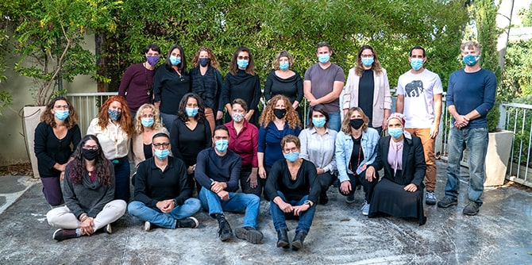
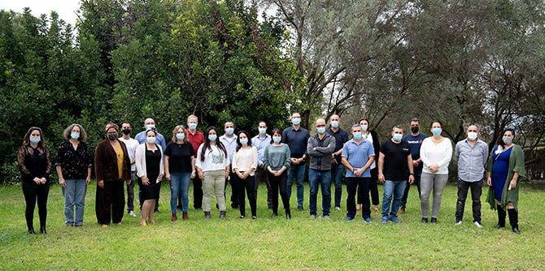
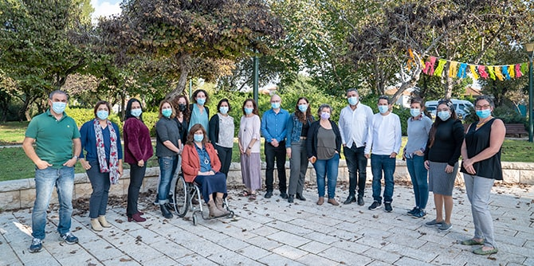

The three programs at the Mandel Center for Leadership in the North began the activities of the 2020–2021 academic year with a sense of optimism and renewal, despite the restrictions of the coronavirus, while carefully observing the Ministry of Health's COVID-19 regulations. The opening sessions of the three programs introduced the new fellows to the ideas and methods of the Center, to its staff, and to each other.

In late October, the Mandel Program for Social Leadership in the North launched its activities on the lawns of Kibbutz Sha’ar Ha’amakim. The first day of studies began with a musical performance by the activist hip-hop group System Ali, which connected fellows through songs in the six different languages that the band's members speak. The fellows also met with Miki Nevo, director of the Mandel Center for Leadership in the North, for an introductory lecture on social entrepreneurship.
The second day of the program introduced the fellows to some of the lecturers who will teach them during the year. The fellows participated in sessions that gave them a taste of the content that they will be studying, encouraged discourse on current political issues, built a knowledge base and explored alternatives for policy solutions, and included an inspirational meeting dedicated to topics related to the humanities.

The
Mandel Program for Public Service Leadership began its activities in November. At the opening session, held outdoors at Kibbutz Hazorea, the fellows participated in roundtable discussions in which they drafted group contracts regarding the nature of discourse and general atmosphere that would characterize the program. Following this, the fellows met with
Emi Palmor, former director general of the Ministry of Justice, who shared some of her experiences from her tenure at the Ministry.
Miki Nevo, director of the Mandel Center for Leadership in the North, then gave an introductory lecture on management and leadership. Finally, the fellows listened to
Miriam Toukan, a singer, lawyer, and political activist who performed songs in Hebrew, Arabic, and English.

The launch event of the Mandel Program for Regional Leadership in the North took place in October on Zoom. First, the fellows heard a lecture from Professor Motti Golani, who is the Ruhama Rosenberg Professor for Jewish History and chair of the department of Jewish history at Tel Aviv University, and a faculty member of the Mandel School for Educational Leadership. Professor Golani’s lecture was titled “The past: Is what happened what really happened? On the ‘wall and tower’ settlements, Nir David, and us.”
After the lecture, the fellows split into three separate work groups, each of which met with one of the program mentors in a different "room" and discussed a question related to setting expectations at the outset of the program. After collating the summaries of all three groups, the fellows reconvened to present and discuss their insights. In conclusion, the fellows watched a performance by Miriam Toukan and Idan Toledano of the song “When Bialik Meets Fairuz,” which combines the poetry of Haim Nahman Bialik, the music of the Lebanese vocalist Fairuz, klezmer music, and Arab folk music.
{kind=link}
{kind=link}
{kind=link}